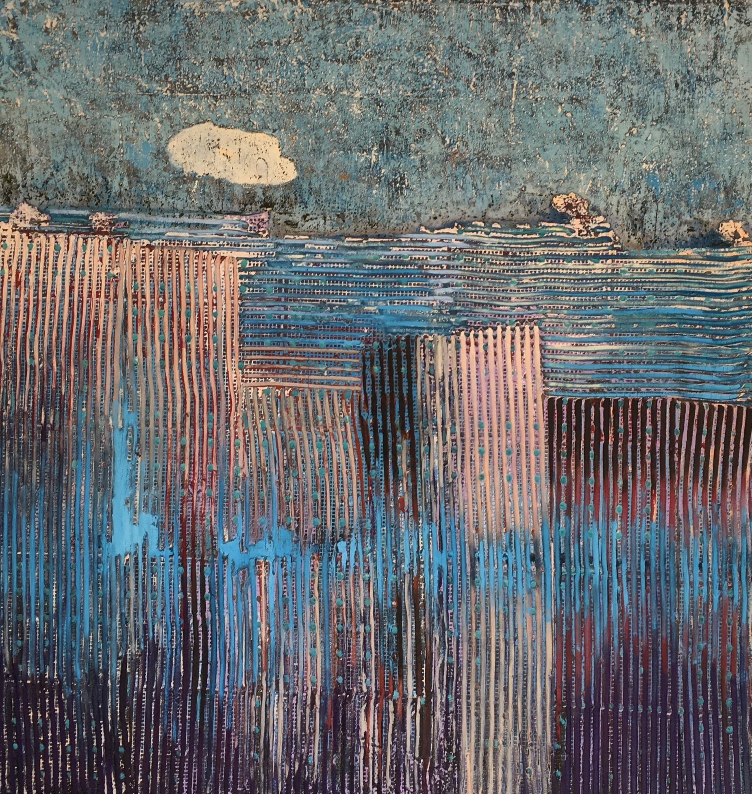

A continuous world of material and forms at different scales, among wood, water, imagined structures and a deep canyon.
The landscapes change as you travel, together with the sky and music. Use the Map to reach them immediately. A complete circuit takes about two minutes.
iPhone: drag to look and hold the arrows to move. Release to stop.
Computer: mouse and W A S D or arrows. Hold Shift to go faster.
Artworks: compare the landscape with its source images.

Landscapes of the planet
Choose a place or start a continuous circuit. You can stop and take control whenever you wish.
How to explore
Look: drag with a finger or the mouse.
Move: hold the screen arrows or use W A S D or the keyboard arrows. Release to stop.
Rise and descend: use + / − or E / Q. J / L turn; I / K look up and down.
Map: choose a landscape. Enter the wood directly from the map; in Metamorphosis you can scatter and reassemble fragments.
Complete artworks repeat across the ground with blended edges. The forms are imagined interpretations, not faithful reconstructions of sculptures.